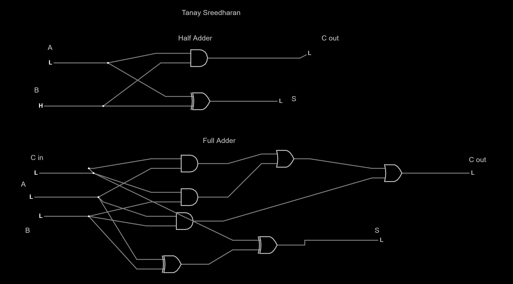

Name: Tanay Sreedharan
Date: 14-Oct-2022
Binary Adder Image

1.1 What truth table do you recognize that produces the output of the Carry column?
It has the same standard output as an AND gate would have.
1.2 What truth table do you recognize that produces the output of the Sum column?
It has the same standard output as a OR gate would have.
2.1 What do you notice about the relationship between the first-half (top four rows) of the full-adder as compared to all of the rows of the half-adder?
The outputs for both of the tables are exactly the same and resemble each other.
2.2 Why is this true?
This is because the first column is not being used during these four outputs so it will produce the same output as the half-adder.
3.1 Why does the least significant bit position use a half-adder rather than a full-adder?
This is because in the first spot we only have two inputs so it will only need a half-adder.
3.2 Assume that proper inputs are applied for all bits in numbers A and B. Will the correct output from S be available instantaneously? If not, why not?
No, because these values wait on the processes occurng to the right. It is a chain reaction so it will take time for the chain to reach the end to get the S value.
3.3 Assume that we have a standard (non-scientific calculator) capable of adding two 16-bit words. Two numbers, A and B, are added together. After the addition, it is noted that C15 is high. What can we infer? What is this state commonly called?
It can be inferred that all of our inputs were true resulting in a very large number that the calculator could not handle.
What did I learn?
I learned about the various uses of hald-adders and full-adders in computers and how they function.
What challenges did I encounter?
At first it was very difficult to understand the many truth tables presented. It was an overwhelming amount of information.
How could this experience be improved?
Including videos or an in class lecture would be useful to help understanding this complex topic.
How has what I learned affected my thinking?
I now understand the various ways computers function and why it can take a long time to proces a simple math equation.